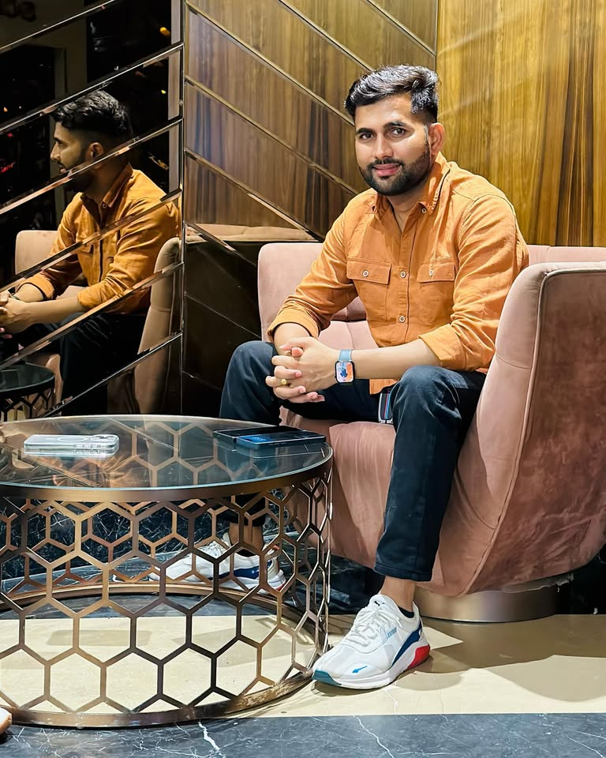

Founder & Director — Bainsla Music Pvt. Ltd.
Reviving the soul of Rajasthani folk music for a global stage

Born on July 4, 1999 in Soorgarh, Sawai Madhopur, Rajasthan, Ajeet Singh Gurjar — known to the world as Ajeet Bainsla — grew up surrounded by the rich melodies of Rajasthani folk culture. Inspired by his father Shiv Lal Gurjar, a writer and farmer with a deep love for music, Ajeet dreamt of taking Rajasthan's soulful traditions to every corner of the globe.
In 2016, alongside his brother Aman Bainsla, he founded Bainsla Music — starting with nothing but raw talent, relentless passion, and a borrowed camera. Today, as the Founder & Director of Bainsla Music Private Limited, Ajeet has produced over 10,000 songs across Rasiya, Bhajan, Languriya, and Shekhawati genres, building one of Rajasthan's most influential music platforms.
His vision is clear: "We aim to breathe new life into Rajasthani folk music and make it shine on the world stage."
Born in the small village of Soorgarh, Sawai Madhopur, Rajasthan. Grew up immersed in the sounds of traditional Rajasthani folk music, inspired by father Shiv Lal Gurjar.
Together with brother Aman Bainsla, started Bainsla Music with no resources — just passion, a vision, and a dream to revive Rajasthani folk music for the digital age.
Crossed 5,000 songs across Rasiya, Bhajan, Languriya, and Shekhawati genres. Bainsla Music became a household name in Rajasthani music circles.
Felicitated by the Rajasthan Government for outstanding contribution to the music industry. Featured in Times of India and national media.
The hit track set YouTube on fire, gaining millions of views. Featured in Firstpost and ABP Live. Bainsla Music cemented its position as Rajasthan's premier music label.
Bainsla Music officially became a Private Limited company. Now producing 10,000+ songs and leading the charge to make Rajasthani folk music a global phenomenon.
From soulful Rasiya to devotional Bhajans — experience the richness of Rajasthani folk
Watch music videos, behind-the-scenes, and live performances on our YouTube channels.
BAINSLA MUSIC HD BAINSLA MUSIC BRANDStream top tracks like Teri Kaniya Kaju Katli Si, Deewani Kar Gyo Gurjar Ko, and more.
Listen on JioSaavnFeatured in India's leading newspapers and news portals
Ajeet Singh Gurjar, also known as Ajeet Bainsla, is making waves with his dedication to the upliftment of Rajasthani folk music. Felicitated by the Rajasthan government for his contribution.
Read Full ArticleReleased under the Bainsla Music banner, this track is quickly becoming a game-changer in the world of Rajasthani music. The song blends traditional folk with modern beats.
Read Full Articleसोशल मीडिया पर जमकर मचा रहे धमाल। बैंसला भाइयों ने 2016 में बैंसला म्यूजिक की शुरुआत की थी। 10,000 से ज्यादा गानों का निर्माण और निर्देशन।
पूरा लेख पढ़ेंबैंसला म्यूजिक का नया गाना 'तुम बदल गये राजा' ने रिलीज होते ही धमाल मचा दिया है। यूट्यूब पर 60 लाख से ज्यादा व्यूज।
पूरा लेख पढ़ेंStay updated with my latest posts, reels, and behind-the-scenes moments
Rajasthan's Premier Music Production Company
Bainsla Music is a distinguished music production company rooted in the vibrant culture of Rajasthan, India. Specializing in the traditional Rajasthani genre of Rasiya songs, the company has been dedicated to preserving and promoting the rich musical heritage of Rajasthan for over 9 years.
Under the visionary leadership of directors Ajeet Bainsla, Shivlal Bainsla, and Aman Bainsla, the company has carved a unique niche in the music industry — creating music that not only entertains but deeply resonates with the essence of Rajasthani traditions.
For collaborations, bookings, and inquiries